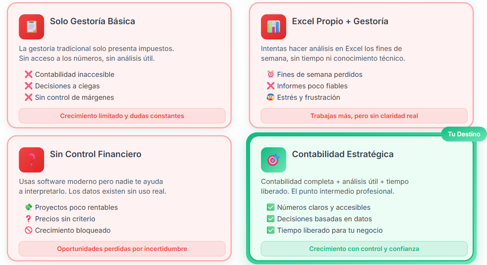

Software contable: ¿Cuál elegir para tu agencia o estudio de arquitectura?
Sin tecnicismos, sin publicidad encubierta, y con la perspectiva de alguien que trabaja como departamento contable externo para estudios y agencias reales cada semana.
Hay un momento que casi todos los dueños de un estudio de arquitectura o agencia creativa han vivido.
Tu gestor te escribe el 15 de enero pidiendo las facturas del trimestre. Abres el Excel, hay tres pestañas distintas, una fórmula que ya no cuadra, y dos facturas que juraste haber metido pero no aparecen. Son las 10 de la noche.
Eso no es un problema de organización. Es un problema de sistema.
Y lo curioso es que la mayoría no lo identifica como tal. Siguen pensando que necesitan ser más ordenados, cuando en realidad lo que necesitan es una herramienta que trabaje para ellos — no al revés.
En este artículo vas a ver exactamente qué opciones tienes como SL en España: desde seguir con Excel (que tiene su lugar, seré honesta) hasta software como Holded, Quipu, Contasimple o Sage 50. Al final sabrás cuál encaja con tu situación, qué preguntas hacerte antes de elegir, y cuándo el software solo no es suficiente.
¿Qué necesita realmente una SL de arquitectura o diseño a nivel contable?
Antes de comparar herramientas, vale la pena hacer una pregunta más básica: ¿qué necesitas realmente que haga tu sistema contable?
Una SL de arquitectura no es una tienda online ni una consultoría de 50 personas. Tiene sus propias particularidades — y elegir software sin tenerlas en cuenta es el error más común. Estas son las necesidades mínimas no negociables:
- Facturación de honorarios por proyecto. Tus ingresos no son recurrentes ni predecibles. Cobras por fases, por encargos, a veces con anticipos. Tu software tiene que gestionar eso sin malabarismos.
- Control de gastos mixtos. Material, desplazamientos, software, colaboradores externos. Algunos son deducibles, otros no del todo. Necesitas tenerlos clasificados sin depender de que alguien te lo explique cada trimestre.
- Obligaciones fiscales de una SL. IVA trimestral, Impuesto de Sociedades, retenciones a colaboradores. Tu herramienta tiene que ayudarte a tener esto bajo control — o al menos a no entorpecerlo.
- Visibilidad financiera real. ¿Sabes cuánto ha ganado tu estudio este mes? Si la respuesta es «más o menos» o «cuando me lo dice el gestor», tienes un problema que ningún Excel va a resolver a largo plazo.
- Colaboración con tu gestor o contable externo. Necesita poder acceder a tu información de forma ordenada. Si cada trimestre le mandas un PDF y tres correos con archivos adjuntos, estás perdiendo tiempo y dinero — los dos.
Excel e informes propios — cuándo tiene sentido y cuándo empieza a costar caro
Seré directa: Excel no es el enemigo. Si acabas de constituir tu SL, tienes dos o tres clientes, facturas poco y tu gestor lleva el peso fiscal — Excel puede ser suficiente. Es flexible, lo conoces, y no te cuesta nada extra.
El problema no es Excel. Es lo que pasa cuando tu negocio crece y Excel no crece contigo.
Lo que Excel hace bien
- Personalizar tus propios informes exactamente como los quieres ver
- Tener control total sobre la estructura de tus datos
- Cruzar información de formas que un software estándar no siempre permite
- Cero coste adicional si ya tienes Office o Google Sheets
Dónde empieza a romperse
- El error humano escala con el volumen. Una fórmula mal copiada, una fila duplicada, una pestaña desactualizada. Con diez facturas al año no pasa nada. Con cincuenta, es cuestión de tiempo.
- No hay automatización. Cada factura la metes tú. Cada gasto lo clasificas tú. Ese tiempo tiene un coste que no aparece en ninguna partida contable, pero existe.
- La visibilidad es estática. Tu Excel te dice dónde estabas cuando lo actualizaste por última vez. No te dice dónde estás hoy.
- Colaborar es incómodo. Mandar archivos por correo, versiones distintas, el gestor trabajando sobre una copia que ya no es la última.
La pregunta clave
No es si Excel sirve. La pregunta es: ¿cuánto te está costando mantenerlo? Si la respuesta honesta es «bastante», sigue leyendo.
Comparativa de software — Holded, Quipu, Contasimple y Sage 50
Estos son los cuatro software que más sentido tienen para una SL de arquitectura o agencia en España en 2026. No te daré una tabla de características interminable — te cuento lo que realmente importa de cada uno.
Holded — El más completo para agencias con visión de negocio
Holded es probablemente el software que más ha crecido entre estudios creativos y agencias en los últimos años. Va más allá de la contabilidad: puedes gestionar proyectos, presupuestos, facturación, CRM y contabilidad desde un mismo sitio.
Lo que funciona especialmente bien para tu tipo de negocio:
- Facturación por proyectos con seguimiento de fases
- Informes financieros en tiempo real — el dashboard te dice dónde estás hoy, no el mes pasado
- Conexión bancaria para conciliación automática
- Acceso multiusuario, ideal para que tu contable externo entre directamente
Sus limitaciones: Es el más caro de los cuatro y tiene una curva de aprendizaje real. Si no lo configuras bien desde el principio, puede volverse confuso.
Para quién tiene más sentido: Estudios o agencias con un volumen medio-alto de facturación que quieren control real sobre sus números.
Quipu — El más sencillo para empezar sin dolor
Quipu nació pensando en autónomos y pequeñas empresas que no quieren complicarse. Y lo consigue.
- Interfaz muy limpia e intuitiva — puedes aprender a usarlo en una tarde
- Gestión de facturas, gastos e impuestos trimestrales de forma guiada
- Buena integración con gestores y asesorías
- Precio accesible
Sus limitaciones: Es precisamente su sencillez lo que lo limita. Si necesitas informes financieros detallados o gestión de proyectos, Quipu se queda corto. Es una herramienta de facturación y fiscalidad, no de gestión financiera.
Para quién tiene más sentido: SL pequeñas que acaban de constituirse o con un volumen bajo de operaciones que buscan principalmente cumplir con Hacienda sin complicaciones.
Contasimple — El más básico, para perfiles muy concretos
El nombre lo dice todo. Contasimple hace lo justo y necesario: facturas, gastos, impuestos.
- Muy fácil de usar desde el primer día
- Precio muy competitivo — tiene incluso plan gratuito con limitaciones
- Cubre los modelos fiscales básicos para SL
Sus limitaciones: Sin conexión bancaria potente, informes limitados y escasa integración con terceros. Si tu negocio tiene algo de complejidad, lo notarás rápido.
Para quién tiene más sentido: SL con actividad muy reducida que buscan una solución económica para ordenar lo mínimo. Si tu estudio está creciendo, probablemente lo abandones en menos de un año.
Sage 50 — El más robusto, para quien necesita contabilidad seria
Sage 50 es otro mundo. Es software de contabilidad profesional — el tipo de herramienta que usa un departamento contable de verdad.
- Contabilidad completa por partida doble
- Gestión avanzada de impuestos, amortizaciones y cierres contables
- Muy asentado en el mercado español — la mayoría de gestores y contables lo conocen bien
- Informes contables detallados y exportaciones en formatos estándar
Sus limitaciones: No está pensado para que lo lleve el dueño del estudio sin conocimientos contables. La interfaz es densa, la curva de aprendizaje es alta y el precio también.
Para quién tiene más sentido: Estudios con cierto volumen y complejidad que ya trabajan con un contable externo — o que están listos para dar ese paso.
Resumen rápido
| Criterio | Holded | Quipu | Contasimple | Sage 50 |
|---|---|---|---|---|
| Facilidad de uso | Media | Alta | Muy alta | Baja |
| Potencia contable | Alta | Media | Básica | Muy alta |
| Informes financieros | Muy buenos | Básicos | Mínimos | Profesionales |
| Gestión de proyectos | Sí | No | No | No |
| Conexión bancaria | Sí | Sí | Limitada | Sí |
| Perfil ideal | Agencia media-grande | SL pequeña | SL muy básica | Con contable externo |
| Precio mensual aprox. | Desde 59 € | Desde 19 € | Desde 0 € | Desde 50 € |
¿Cuál elegir según tu situación?
Antes de darte una recomendación directa, hay una pregunta más importante que «qué software es mejor». La pregunta es: ¿en qué cuadrante estás tú ahora mismo?
Porque el software que necesitas depende completamente de tu punto de partida — y de adónde quieres llegar. La mayoría de estudios y agencias en España están atrapados en uno de estos tres escenarios:
- 📋 Solo gestoría básica. Tu gestor presenta los impuestos y poco más. La contabilidad existe en algún servidor que no es tuyo, no tienes visibilidad de tus números, y las decisiones las tomas a ciegas.
- 📊 Excel propio + gestoría. Intentas llevar tú el control con hojas de cálculo. Los datos están, pero son poco fiables, te roban tiempo, y el estrés de mantenerlos actualizados lo acabas pagando tú.
- ❓ Software moderno, pero sin quien lo interprete. Tienes Holded o similar, los datos están ahí — pero nadie te ayuda a leerlos.
Y luego está el cuadrante donde deberías estar: 🎯 Contabilidad estratégica. Números claros, accesibles y útiles para tomar decisiones. Sin dedicarle tu fin de semana.

Una vez sabes en qué cuadrante estás, la elección de herramienta se vuelve mucho más clara:
- Cuadrante 1 — Solo gestoría: Cualquier software es mejor que nada. Empieza por Quipu o Holded según tu volumen.
- Cuadrante 2 — Excel + gestoría: El salto a Holded te va a cambiar la vida, especialmente si tienes varios proyectos activos.
- Cuadrante 3 — Software sin interpretación: El problema no es la herramienta, falta alguien que te ayude a leer los datos. Sage 50 con un contable externo es probablemente tu siguiente paso.
- Cuadrante 4 — o quieres llegar ahí: La herramienta importa menos que el sistema detrás. Lo que marca la diferencia es tener a alguien que no solo meta los datos, sino que te ayude a entender qué significan para tu negocio.
Cuándo el software no es suficiente — el rol del departamento contable externo
Hay algo que ninguna comparativa de software te va a decir: que el problema de la mayoría de estudios de arquitectura y agencias no es que tengan el software equivocado. Es que tienen los datos en algún sitio — y nadie que les ayude a convertirlos en decisiones.
Un software contable, por muy bueno que sea, hace exactamente lo que le pides. Registra, clasifica, genera informes. Pero no te dice si tu proyecto más reciente fue realmente rentable una vez descontadas las horas extra. No te avisa de que tu margen lleva tres trimestres bajando.
El gestor tradicional tampoco lo hace
Y aquí está el problema real: tienen un gestor que cumple. Presenta los impuestos a tiempo, lleva los libros, no da problemas. Pero cuando preguntas «¿cómo voy este año?», la respuesta es vaga, llega tarde, o simplemente no llega. No es culpa del gestor — es lo que hace una gestoría tradicional.
El punto intermedio que necesitan los estudios
Un departamento contable propio para una SL de 5 a 15 personas no compensa. Pero quedarse solo con una gestoría básica tampoco. El punto intermedio es un departamento contable externo — alguien que no solo lleva los números, sino que los entiende, los interpreta y te los explica en lenguaje de negocio.
¿Cómo saber si lo necesitas?
Si no sabes con certeza si tu estudio fue rentable el trimestre pasado, tomas decisiones de precios basándote en sensaciones, tienes software contable pero no sabes si lo estás usando bien, o la contabilidad siempre va por detrás de tu negocio real — la respuesta es probablemente sí.
Conclusión: La herramienta importa, pero no es suficiente
Si has llegado hasta aquí, ya tienes más claridad de la que tenía la mayoría antes de elegir su software contable. Sabes que Holded es la opción más completa para agencias con visión de negocio, que Quipu funciona bien si empiezas y no quieres complicarte, que Contasimple es suficiente solo en casos muy concretos, y que Sage 50 brilla cuando hay un profesional contable detrás.
Pero sobre todo sabes algo que va más allá del software: la herramienta no toma decisiones por ti. Los datos en un dashboard no te dicen si deberías subir tus honorarios. Ningún software te llama para avisarte de que algo no cuadra. Eso lo hace una persona con criterio contable.
La buena noticia es que no necesitas montar un departamento interno para tenerlo. Cada vez más estudios y agencias en España trabajan con un modelo de contabilidad externa que va más allá de la gestoría tradicional. Si estás evaluando si ese modelo tiene sentido para tu estudio, ya sabes dónde encontrarme.
¿Tienes dudas sobre qué herramienta elegir?
Cuéntame tu situación y te digo qué encaja mejor con el tamaño y las necesidades reales de tu estudio o agencia.
Hablemos →